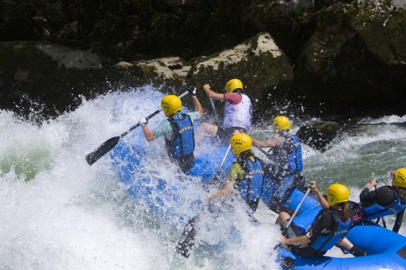

"Miracle Peace Graphics Hub was founded in 2007 by Miracle Peace Peter with a passion for exploring Nigeria's waterways and sharing that excitement with others. Starting with a single raft and a dream, we've grown into a leading adventure tourism operator, offering thrilling experiences on the Niger River and beyond. Our expert guides and commitment to safety have made Miracle Peace Graphics Hub a trusted choice for locals and visitors Whether you're a thrill-seeker, nature lover, or just looking for a unique experience, Miracle Peace Graphics Hub is your go-to destination for unforgettable adventures on Nigeria's waters."

Rafting Company
History
"Miracle Peace Graphics Hub was founded in 2007 by Miracle Peace Peter with a passion for exploring Nigeria's waterways and sharing that excitement with others. Starting with a single raft and a dream, we've grown into a leading adventure tourism operator, offering thrilling experiences on the Niger River and beyond. Our expert guides and commitment to safety have made Miracle Peace Graphics Hub a trusted choice for locals and visitors alike.